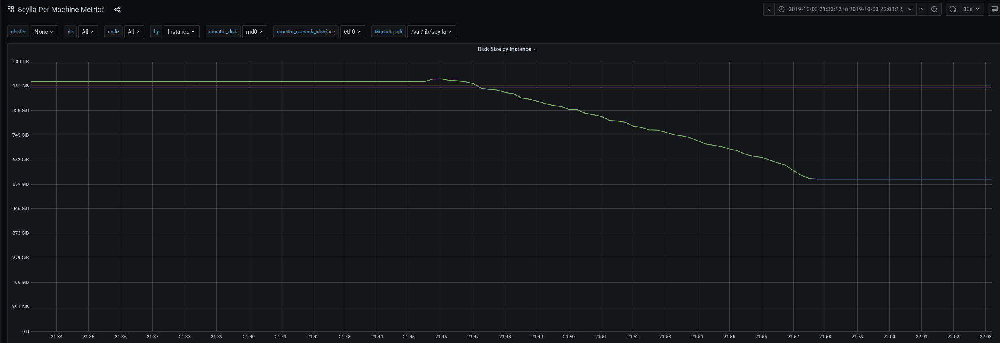

Was this page helpful?
Caution
You're viewing documentation for a previous version. Switch to the latest stable version.
Choose a Compaction Strategy¶
Scylla implements the following compaction strategies in order to reduce read amplification, write amplification, and space amplification, which causes bottlenecks and poor performance. These strategies include:
Size-tiered compaction strategy (STCS) - triggered when the system has enough (four by default) similarly sized SSTables.
Leveled compaction strategy (LCS) - the system uses small, fixed-size (by default 160 MB) SSTables distributed across different levels.
Incremental Compaction Strategy (ICS) - shares the same read and write amplification factors as STCS, but it fixes its 2x temporary space amplification issue by breaking huge sstables into SSTable runs, which are comprised of a sorted set of smaller (1 GB by default), non-overlapping SSTables.
Time-window compaction strategy (TWCS) - designed for time series data; replaced Date-tiered compaction.
Date-tiered compaction strategy (DTCS) - designed for time series data.
This document covers how to choose a compaction strategy and presents the benefits and disadvantages of each one. If you want more information on compaction in general or on any of these strategies, refer to the Compaction Overview. If you want an explanation of the CQL commands used to create a compaction strategy, refer to Compaction CQL Reference .
Learn more in the Compaction Strategies lesson on Scylla University
Size-tiered Compaction Strategy (STCS)¶
The premise of Size-tiered Compaction Strategy (STCS) is to merge SSTables of approximately the same size.
Size-tiered compaction benefits¶
This is a popular strategy for LSM workloads. It results in a low and logarithmic (in size of data) number of SSTables, and the same data is copied during compaction a fairly low number of times. Use the table in Which strategy is best to determine if this is the right strategy for your needs.
Size-tiered compaction disadvantages¶
This strategy has the following drawbacks (particularly with writes):
Continuously modifying existing rows results in each row being split across several SSTables, making reads slow, which doesn’t happen in Leveled compaction.
Obsolete data (overwritten or deleted columns) in a very large SSTable remains, wasting space, for a long time, until it is finally merged. In overwrite-intensive loads for example, the overhead can be as much as 400%, as data will be duplicated 4X within a tier. On the other hand, the output SSTable will be the size of a single input SSTable. As a result, you will need 5X the amount of space (4 input SSTables plus one output SSTable), so 400% over the amount of data currently being stored. The allocated space will have to be checked and evaluated as your data set increases in size.
Compaction requires a lot of temporary space as the new larger SSTable is written before the duplicates are purged. In the worst case up to half the disk space needs to be empty to allow this to happen.
To implement this strategy
Set the parameters for Size-tiered compaction.
Leveled Compaction Strategy (LCS)¶
Leveled Compaction Strategy (LCS) uses small, fixed-size (by default 160 MB) SSTables divided into different levels. Each level represents a run of a number of SSTables.
Leveled Compaction benefits¶
With the leveled compaction strategy, the following benefits are noteworthy:
SSTable reads are efficient. The great number of small SSTables doesn’t mean we need to look up a key in that many SSTables, because we know the SSTables in each level have disjoint ranges, so we only need to look in one SSTable in each level. In the typical case, only one SSTable needs to be read.
The other factors making this compaction strategy efficient are that at most 10% of space will be wasted by obsolete rows, and only enough space for ~10x the small SSTable size needs to be reserved for temporary use by compaction.
Use the table in Which strategy is best to determine if this is the right strategy for your needs.
Leveled Compaction disadvantages¶
The downside of this method is there is two times more I/O on writes, so it is not as good for workloads which focus on writing mostly new data.
Only one compaction operation on the same table can run at a time, so compaction may be postponed if there is a compaction already in progress. As the size of the files is not too large, this is not really an issue.
To implement this strategy
Set the parameters for Leveled Compaction.
Incremental Compaction Strategy (ICS)¶
Added in version 2019.1.4: Scylla Enterprise
Note
ICS is only available for Scylla Enterprise customers
ICS principles of operation are similar to those of STCS, merely replacing the increasingly larger SSTables in each tier, by increasingly longer SSTable runs, modeled after LCS runs, but using larger fragment size of 1 GB, by default.
Compaction is triggered when there are two or more runs of roughly the same size. These runs are incrementally compacted with each other, producing a new SSTable run, while incrementally releasing space as soon as each SSTable in the input run is processed and compacted. This method eliminates the high temporary space amplification problem of STCS by limiting the overhead to twice the (constant) fragment size, per shard.
Incremental Compaction Strategy benefits¶
Greatly reduces the temporary space amplification which is typical of STCS, resulting in more disk space being available for storing user data.
The space requirement for a major compaction with ICS is almost non-existent given that the operation can release fragments at roughly same rate it produces new ones.
If you look at the following screenshot the green line shows how disk usage behaves under ICS when major compaction is issued.
Incremental Compaction Strategy disadvantages¶
Since ICS principles of operation are the same as STCS, its disadvantages are similar to STCS’s, except for the temporary space amplification issue.
Namely:
Continuously modifying existing rows results in each row being split across several SSTables, making reads slow, which doesn’t happen in Leveled compaction.
Obsolete data (overwritten or deleted columns) may accumulate across tiers, wasting space, for a long time, until it is finally merged. This can be mitigated by running major compaction from time to time.
To implement this strategy
Set the parameters for Incremental Compaction.
For more information, see the Compaction KB Article.
Time-window Compaction Strategy (TWCS)¶
Time-window compaction strategy was introduced in Cassandra 3.0.8 for time-series data as a replacement for Date-tiered Compaction Strategy (DTCS). Time-Window Compaction Strategy compacts SSTables within each time window using Size-tiered Compaction Strategy (STCS). SSTables from different time windows are never compacted together. You set the TimeWindowCompactionStrategy parameters when you create a table using a CQL command.
Caution
We strongly recommend using a single TTL value for any given table.
This means sticking to the default time to live as specified in the table’s schema.
Using multiple TTL values for a given table may lead to inefficiency when purging expired data, because an SSTable will remain until all of its data is expired.
Tombstone compaction can be enabled to remove data from partially expired SSTables, but this creates additional WA (write amplification).
Caution
Avoid overwriting data and deleting data explicitly at all costs, as this can potentially block an expired SSTable from being purged, due to the checks that are performed to avoid data resurrection.
Time-window Compaction benefits¶
Keeps entries according to a time range, making searches for data within a given range easy to do, resulting in better read performance
Improves over DTCS in that it reduces the number to huge compactions
Allows you to expire an entire SSTable at once (using a TTL) as the data is already organized within a time frame
Time-window Compaction deficits¶
Time-window compaction is only ideal for time-series workloads
To implement this strategy
Set the parameters for Time-window Compaction.
Use the table in Which strategy is best to determine if this is the right strategy for your needs.
Date-tiered Compaction Strategy (DTCS)¶
Date-Tiered Compaction is designed for time series data. This strategy was introduced with Cassandra 2.1. It is only suitable for time-series data. This strategy is not recommended and has been replaced by Time-window Compaction Strategy.
Which strategy is best¶
Every workload type may not work well with every compaction strategy. Unfortunately, the more mixed your workload, the harder it is to pick the correct strategy. This table presents what can be expected depending on the strategy you use for the workload indicated, allowing you to make a more informed decision. Keep in mind that the best choice for our testing may not be the best choice for your environment. You may have to experiment to find which strategy works best for you.
Compaction Strategy Matrix¶
The table presents which workload works best with which compaction strategy. In cases where you have the ability to use either STCS or ICS, always choose ICS.
Workload/Compaction Strategy |
Size-tiered |
Leveled |
Incremental |
Time-Window |
Comments |
|---|---|---|---|---|---|
Write-only |
|||||
Overwrite |
|||||
Read-mostly, with few updates |
|||||
Read-mostly, with many updates |
|||||
Time Series |
The comments below describe the type of amplification each compaction strategy create on each use case, using the following abbreviations:
SA - Size Amplification
WA - Write Amplification
RA - Read Amplification
1 When using Size-tiered with write-only loads it will use approximately 2x peak space - SA with Incremental, the SA is much less
2 When using Leveled Compaction with write only loads you will experience high Write Amplification - WA
3 When using Size-tired or Incremental with Overwrite loads, SA occurs
4 When using Leveled Compaction with overwrite loads, WA occurs
5 When using Size-tiered with mostly read loads with little updates, SA and RA occurs
6 When using Leveled with mostly read loads with many updates, WA occurs in excess
7 When using Size-tiered or Incremental with Time Series workloads, SA, RA, and WA occurs.
8 When using Leveled with Time Series workloads, SA and WA occurs.
References¶
Compaction Overview - contains in depth information on all of the strategies
Compaction CQL Reference - covers the CQL parameters used for implementing compaction
Scylla Summit Tech Talk: How to Ruin Performance by Choosing the Wrong Compaction Strategy